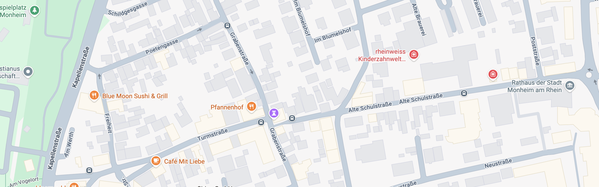

QUEST MAP — MONHEIM ALTSTADT
Start (Rathaus)
Gegner (Lv 1–4, 6–10)
Mid-Boss (Lv 5)
Endboss (Lv 11)
Quest-NPC

START
★
⚜ Ingrid
Q
⚜ Eva
Q
⚜ Elena
Q
⚜ Henrik
Q
⚜ Simon
Q
Simon Lv.1
1
Hubi Lv.2
2
Eva Lv.3
3
Jess Lv.4
4
⚔ Elena Lv.5 (Mid-Boss)
5
Daniel Lv.6
6
Mirko Lv.7
7
Der Vater Lv.8
8
Nick Lv.9
9
Lukas Lv.10
10
☠ Lennart Lv.11 (Endboss)
11